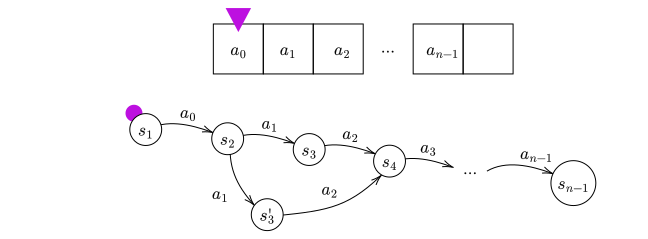
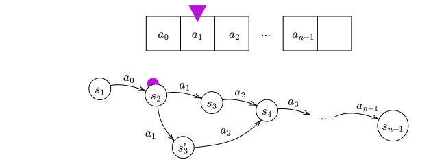
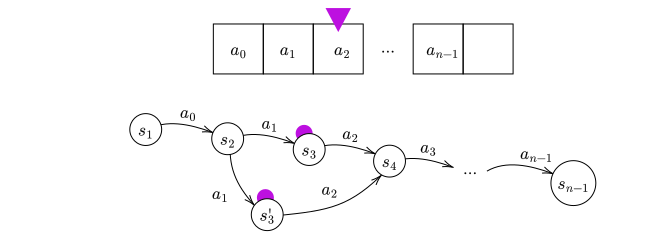
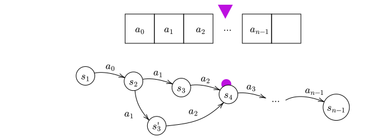
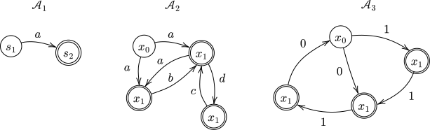

Reading words
We arrived at the definition of automata by way of abstraction, letting go of the specifics of states of a Sokoban puzzle or the transitions corresponding to legal moves.
Here is that definition one more time:
(Automaton)
An
automaton \(\mathcal A = (Q, A, \delta, F)\) consists of the following data:
- A set \(Q\) of states, called the state space
- A set \(A\) of input letters, called the input alphabet
- A set \(\delta \subseteq Q \times A \times Q\) of transitions, called the transition relation
- A set \(F \subseteq Q\) of final (also called accepting) states
Given states \(x_1,x_2 \in Q\) and an input letter \(a \in A\), we write \(x_1 \xrightarrow{a}_\delta x_2\) to mean that \((s_1, a, s_2) \in \delta\).
Furthermore, given \(x \in Q\) and in input letter \(a \in A\), we define the set of
outgoing \(a\)-transitions from state \(x\) by
\[
\delta(x, a) = \{y \in Q \mid x \xrightarrow{a}_\delta y\}
\]
In other words, \(y \in \delta(x, a)\) if and only if \(x \xrightarrow{a}_\delta y\).
We talked briefly about "paths" through an automaton, which correspond to sequences of legal moves.
Paths are a very special kind of "run of a program", the general idea of which we return to today.
The foundational intuitions you should keep in mind for the duration of the course are
- An automaton is a machine that is capable of running one of several programs.
- A state in an automaton is a program.
- The runtime and output of a program is determined by the input given to the program.
The piece of this that we are missing so far is 3, the idea of "input".
For us, "input" is referring to a sequence of input letters, which you can think of as commands.
In theoretical computer science, these are called words.
(Words)
Fix a set \(A\) of input letters.
A
word (or
string)
from \(A\) is a finite sequence of input letters
\[
a_0a_1a_2\dots a_{n-1}
\]
where \(a_i \in A\) for all \(i < n\).
The number \(n\) in the word \(w = a_0a_1a_2\dots a_{n-1}\) is the
length of \(w\) and written \(|w| = n\).
Taking \(n = 0\) in the above definition, we obtain the empty word, which is written \(\varepsilon\).
The empty word is the unique word of length \(0\).
The set of all words from \(A\) is written with a superscripted star,
\[
A^* = \big\{a_0a_1a_2\dots a_{n-1} \mid \text{\(n \ge 0\) and \(a_i \in A\) for all \(i < n\)} \big\}
\]
Words (also called strings) are an abstraction from sequences of instructions/legal actions/moves/and so on.
For example, \(\Uparrow\Rightarrow\Rightarrow\Downarrow\) is a word from the familiar alphabet \(A = \{\Downarrow, \Leftarrow, \Uparrow, \Rightarrow\}\).
Given an automaton \(\mathcal A\) and a word \(w \in A^*\), each state of \(\mathcal A\) can be "run against \(w\)" by exploring all of the transitions obtained from the sequence of actions in \(w\).
In the context of automata theory, this is usually called reading the word.
(Reading a Word)
Let \(\mathcal A = (Q, A, \delta, F)\) be an automaton, and let \(w = a_0a_1a_2\dots a_{n-1}\) be a word from \(A\).
Given a state \(x \in Q\), \(x\) reads \(w\) and stops at \(y\) if there is a sequence of transitions
\[
x \xrightarrow{a_0}_\delta x_1 \xrightarrow{a_1}_\delta x_2 \xrightarrow{a_2}_\delta x_3 \xrightarrow{a_3}_\delta \cdots \xrightarrow{a_{n-1}}_\delta y
\]
The set of all states such that \(x\) reads \(w\) and stops at \(y\) is denoted writing the word into \(\delta(x, \ \ )\) instead of a letter.
\[
\delta(x, w) = \big\{ y \in Q \mid \text{\(x\) reads \(w\) and stops at \(y\)} \big\}
\]
You want to imagine this as follows: write the word \(a_0a_1a_2\dots a_{n-1}\) from \(A\) on a strip of paper.
This strip of paper is called the tape.
Put the head of your pencil above the first letter on the tape.
This marker indicating the currently-active part of the tape is called the tape head.
Finally, place a marker on the state you are reading from, in this case \(x\).
This is called an active state.

Initial setup for reading a word.
Now repeat the following until the tape head is over an empty part of the tape:
- Read the letter under the tape head. Call it \(a_i\).
- For each active state \(y\) (a state with a marker on it) with a transition \(y \xrightarrow{a_i} z\), remove the marker from \(y\) and place a marker on \(z\). Now \(z\) is active.
- Move the tape head to the right and go back to 1.
Let us run this algorithm on the initial setup for reading a word above.
First, the tape head reads \(a_0\).
Since there is a transition \(s_1 \xrightarrow{a_0} s_2\), we remove the marker from \(s_1\) and place a marker on \(s_2\).
We then move the tape head to the right.

Now the tape head reads \(a_1\).
Since there are transitions \(s_2 \xrightarrow{a_1} s_3\) and \(s_2 \xrightarrow{a_1} s_3'\), remove the marker from \(s_2\) and place markers on \(s_3\) and \(s_3'\).
Now move the tape head to the right.

The tape head reads \(a_2\).
Since there are transitions \(s_3 \xrightarrow{a_2} s_4\) and \(s_3' \xrightarrow{a_2} s_4\), remove the markers from \(s_3\) and \(s_3'\) and place a marker on \(s_4\).
Now move the tape head to the right...

...and so on.
(Reading Examples)
Calculate the set \(\delta(x, w)\) where...
- \(x = s_1\) in \(\mathcal A_1\) and \(w = a\)
- \(x = s_1\) in \(\mathcal A_1\) and \(w = aa\)
- \(x = x_0\) in \(\mathcal A_2\) and \(w = abd\)
- \(x = x_0\) in \(\mathcal A_2\) and \(w = ad\)
- \(x = x_1\) in \(\mathcal A_2\) and \(w = abd\)
- \(x = x_0\) in \(\mathcal A_3\) and \(w = 01\)
- \(x = x_1\) in \(\mathcal A_3\) and \(w = 01\)
- \(x = x_0\) in \(\mathcal A_3\) and \(w = 1110\)

(The Best Tweet)
Let \(\mathcal A = (Q, A, \delta, F)\) be an automaton and let \(x \in Q\).
What is \(\delta(x, \varepsilon)\)? (Remember that \(\varepsilon\) is the empty word.)
Said differently, what is the result of reading \(\varepsilon\) from a state \(x\)?
Given two words \(w\) and \(u\) from \(A\) (\(w,u \in A^*\)), we can always form the word \(wu\) by concatenating them (the idea is the same as for strings in Python or Java).
More specifically, if \(w = a_0a_1\cdots a_{n-1}\) and \(u = b_0b_1\cdots b_{m-1}\), then
\[
w u = a_0 a_1 \cdots a_{n-1} b_0 b_1 \cdots b_{m-1}
\]
In particular, given a letter \(a \in A\) and a word \(w \in A^*\), we can append \(a\) to the beginning or end of \(w\): at the beginning we'd get \(a w\), and at the end we'd get \(w a\).
If \(w = a_0 a_1 \cdots a_{n-1}\) and \(u = b_0 b_1 \cdots b_{m-1}\), then what is \(|w u|\) (the length of \(w u\))?
If \(a \in A\), what is \(|w a|\)?
(Repeated Derivatives)
Let \(\mathcal A = (Q, A, \delta, F)\) be an automaton, let \(x \in Q\), and \(w \in A^*\) and \(a \in A\).
Prove the following identity:
\[
\delta(x, w a) = \{z \mid z \in \delta(y, a) \text{ and } y \in \delta(x, w)\}
\]
You are going to show two things: (1) that
\[
\delta(x, w a) \subseteq \{z \mid z \in \delta(y, a) \text{ and } y \in \delta(x, w)\}
\hspace{10em} \text{(1)}
\]
and (2), that
\[
\delta(x, w a) \supseteq \{z \mid z \in \delta(y, a) \text{ and } y \in \delta(x, w)\}
\hspace{10em} \text{(2)}
\]
The first inclusion, (1), is a matter of unfolding the definition.
For (2), let \(w = a_0 a_1 \cdots a_{n-1}\).
We know that \(z \in \delta(y, a)\) means that \(y \xrightarrow{a} z\).
Conclude by writing down the definition of \(y \in \delta(x, w)\).
Reachability
Often, not every state of an automaton is relevant to the acceptance/rejection of a particular word by a particular state.
Reading a word from a particular state, we may never encounter some of the states of the automaton.
(Reachable)
Let \(\mathcal A = (Q, A, \delta, F)\) be an automaton, and let \(x \in Q\) be any state.
A state \(y \in Q\) is reachable from \(x\) if there is a word \(w\in A^*\) such that \(y \in \delta(x, w)\).
This is equivalen
Induction on Words
It sounds a little silly to say out loud, but every word is composed of its letters.
What is meaningful about this is the following statement: every word \(w \in A^*\) is either the empty word \(\varepsilon\) or is of the form \(w a\), where \(w \in A^*\) and \(a \in A\).
This fact can be used in proofs by induction on words, which is the content of the theorem below.
(Induction on Words)
Let \(A\) be a set of input letters, and let \(L \subseteq A^*\) be a set of words from \(A\).
Suppose that the following two statements hold:
- the empty word is in \(L\), \(\varepsilon \in L\)
- for any \(w \in L\) and any \(a \in A\), \(w a \in L\)
Then \(L = A^*\).
The first statement in the Induction on Words theorem is called the Base Case and the second statement is called the Induction Step.
Induction on words is a powerful proof method in the theory of computation.
(Who's Missing?)
Let \(A = \{0, 1\}\) and consider the following language:
\[
L = \{\varepsilon, 0, 1, 01, 10, 11, 00, 000, 001, 010, 100, 011, 101, 111\} \subseteq A^*
\]
Find the shortest word \(w \in L\) and the letter \(a \in A\) such that \(w \in L\) but \(w a \notin L\).
(Determinstic Extension)
Let \(\mathcal A = (Q, A, \delta, F)\) be a
total deterministic automaton.
Let \(x \in Q\) and \(w \in A^*\).
Prove that \(\delta(x, w)\) has exactly one element using Induction on Words.
Let \(L = \{w \in A^* \mid \text{\(\delta(x, w)\) has one element}\}\).
Show that (Base Case) \(\varepsilon \in L\), and (Induction Step) that if \(w \in L\), then \(w a \in L\) for any \(a \in A\).
If it helps, try using the Repeated Derivatives problem.
You won't often need it, but a stronger version of Induction on Words is true.
I encourage you to use it when you find that Induction on Words is not enough.
(Strong Induction on Words)
Let \(A\) be a set of input letters, and let \(L \subseteq A^*\) be a set of words from \(A\).
Suppose that the following two statements are true:
- \(\varepsilon \in L\)
- for any \(w \in A^*\), if \(u \in L\) for every \(u \in A^*\) such that \(|u| < |w|\), then \(w \in L\)
Then \(L = A^*\).
(Induction on Words 2)
Let \(A\) be a set of input letters, and let \(L \subseteq A^*\) be a set of words from \(A\).
Prove the following statement: if
- \(\varepsilon \in L\), and
- for any \(w \in L\) and any \(a \in A\), \(a w \in L\),
then \(L = A^*\).
Use Strong Induction on Words.
In the inductive step, you are trying to show that if \(u \in L\) whenever \(|u| < |w|\), then \(w \in L\).
Let \(w = a_0a_1\cdots a_{n-1}\), and define the letters \(b = a_0\), \(b_{i} = a_{i+1}\) for \(i < n - 1\).
Let \(u = b_0 b_1 \cdots b_{n-1}\).
Then \(w = b u\) and \(|u| < |w|\).
Now look at assumption 2.